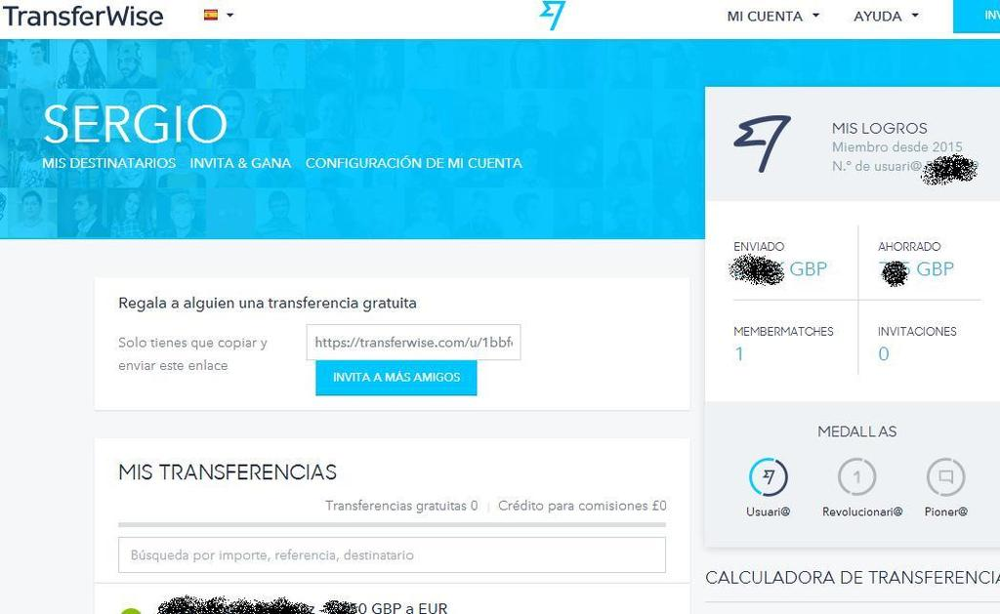

If you go to travel abroad for a long time and you don´t like loose money this threath will be intereseting for you.
Banks normally charge you a fix comission for transfer your money, although they always said you that there is any fee for move your money from them to outside.
However, they didn´t say you the broker who change your money at the same time he does the operation he will earn until a 3%, and if you do exactly at same time you could sabe this 2-3%.
When you are moving big quantities this 3% could supose 1 month of your earnings.
If you are client of a bank with big quantities you can deal a commision but honestly they will profit a lot with this transaction,+ is better to do by your own.
If the days the exchanges rates have big volatilty you have more risk of loose money if it is the bank who do the operation and you give them free hands.


I have been living abroad enough time to earn some money and know about this matter and I will say that the platform I present here, transferwise, is a smart and easy way to transfer
money between countries losing just a bit in comission. It is very popular in the world and you can trust if you look in google about it.
In some cases as in england having anTransferwiseaccount for transfers you don´t need to pay these exchange looses, only a 0.5% of the
value it is changing at this time, that is the price it takes the platform as business and you can use as ever you like.
There are countries where transferwise has not a operational site and in these cases you need to pay and additional quantity to transferwise. Therefore it is good to know in the place from you are going
to do the transfer before to execute it.
If you like to know about the exchange rates here i left you a website where you could know before how it is the change and the different events than can fluctuate the foreign exchange.
Investing_currencies
Once we have create the acoount:

For do the movements between accounts yo have two options, transfer the exchange from the account of your bank or pay with credit card until 2.000€.
First you go to begin now, and will appear the next panel:
On the right part of panel you will see the number of user that it should appear your number of user.
It will appear the real money you have and even a estimation of how much you could save instead a when you pass the first step of the transfer it will appear the exchange of the transfer:
In this case you could see that it give me an exchange of 1.375€ per pound.
Taking the included value one the superior bar (0.7248 pounds per euro or that is the same 1.3795 euros per pound that it could said that the money in exchange it is pretty similar to the sent money.
In this case, it has been an big change in the last time. Normally it will appear a exchange that could be more or less to the moment but aproaching too much.
Transferwise use to be bigger due to the money not really change in the exchange rate but it use the own money of the transfer between users, so a system peer with the request of toher people.
If the quantity is big and the exchange rate you ask is very tigh (normally is between 0.5% and 3%), it could be take time to be completed.
In my case the maximum time it takes me was about a week with a quantity of 8k pounds.
Next steps you should follow is the information of the issuer account and the receiver account with their personal information.
All the information about the account on which income do will appear in the next step. Once you have done the third step you will receive an email where it appears the transfer
is on waiting, and moment of transferwise will receive the moneit, it will begin to start the conversion of the currency before start the transfer to the bank account of the other country.
Here you need to be careful because it will appehttps://raw.githubusercontent.com/SERGIOLM/diariodeuningeniero/master/imgs/ is the % of the exchange rate than you will available to loose, between 0.5 an 3%.
In case you are not hurry for receive the money yo will fix the exchange rate to 0.5% (the minimum). Before to do the transfer it will appear also the money than transferwise
will remain (this 0.5%)

In my case the highest transfer id did it was about 8.000 pounds and the total comission it was 40 pounds.
So for have a general idea if you would like to move around 24k pounds the comission would reach 120 pounds.
A minimal comission compared with the looses of exchange rate.
I decided of not transfer money after a while knowing that it will be changes in the Euro zone than could foreshadow a fall of the euro.
This events will be the Greek crise in the eurozone. After this fall of euro I did my change and before the british elections than could affect in the other side to the exchange.
 If you are going to transfer your money have in mind this kind of changes because a fall of 10% or 15% could suppose a thousands of euros, and in the case you will move your savings
of few years you need to look all carefully and follow the exchange rates for months to know what will be the better moment to proceed.
In this case transferwise is fast and can give you accurate inofrmation of the exchange.
If you are going to transfer your money have in mind this kind of changes because a fall of 10% or 15% could suppose a thousands of euros, and in the case you will move your savings
of few years you need to look all carefully and follow the exchange rates for months to know what will be the better moment to proceed.
In this case transferwise is fast and can give you accurate inofrmation of the exchange.
If you look the next chart you will see i did my operations before the pound high an the other when it come to normal state, because volatility very high than not all days happen.
In red it is mark the moments I did my transfers.
For more information about the behaviour of the currency I was looking on the next website. A trustly site because the econmist hit well to the results.

© 2016 - All Rights Reserved - Diseñada por Sergio López Martínez
![[Valid RSS]](https://www.feedvalidator.org/images/valid-rss-rogers.png "Validate my RSS feed")